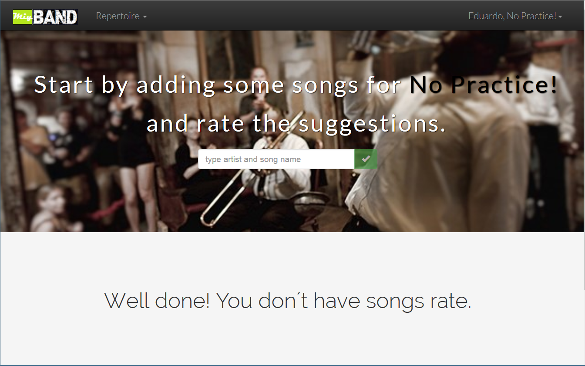

Add song sugestions to your band´s evaluation,
after the rating process the song will be added to the Repertoire

Type the song and artist name to search Musixmatch catalog

Songs will be Unrate until all the band rate it, if you don´t want to play that song it will be saved as backlog

The songs list can be filtered and organized

Selecting a song all you can see the auto populated field and lyrics and edit

Lyrics are automatic loaded

Organize songs in Setlists

You can have as many as needed

The songs can be organized in any order by dragg and drop

Play mode will show the songs in the setlist order